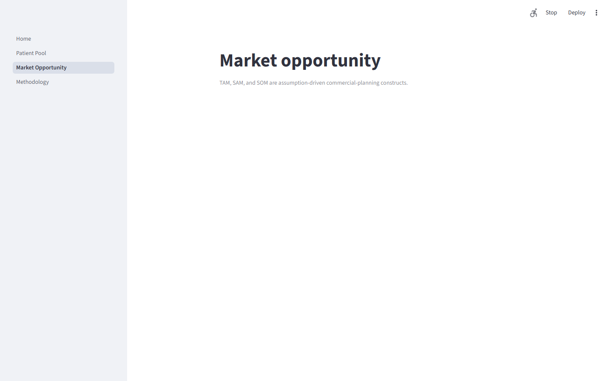

Data analytics
Oncology Patient-Pool & Market Opportunity Forecast
A scenario-based analytics workflow for oncology patient-pool and market-opportunity questions. The dashboard preview uses the repository's synthetic example data only.
- Python
- Streamlit
- Scenario Modeling
- Data Analytics